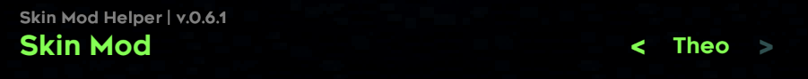
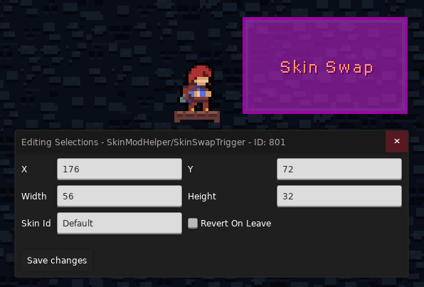

Skin Mod Helper(SMH)
参考
Skin Mod Helper 提供了最基础的改色功能和皮肤切换功能, 给人一种朴实无华的感觉, 我们将以 Theo 皮肤为例给你讲解其中的细节(虽然 SMH
文档里都写了), 为后续使用 SMH+ 提供方便
SkinModHelperConfig.yaml
在你的皮肤 Mod 根目录放置 SkinModHelperConfig.yaml, 这是皮肤 Mod 的身份证
| SkinModHelperConfig.yaml | |
|---|---|
1 2 3 4 5 6 7 | |
SkinId
这是你皮肤的 ID, 它有两个作用
- 作为皮肤 ID 的唯一标识, 如果你的 ID 跟别人的皮肤重了, 那么只会加载其中一个(或者说另一个会被覆盖)
- 作为自定义路径指示, SMH 会将 ID 中的下划线
_替换为斜杠/, 这里 SkinId 对应的路径为Guizs/TheoSkin, 后续我会使用{UniquePath}来指代这个路径, 比如Graphics/{UniquePath}/Sprites.xml
所以你会发现
- 原本应该放在
Graphics/文件夹里的Sprites.xml现在被放到了Graphics/{UniquePath}/里 - 原本应该放在
Graphics/Atlases/Gameplay/characters/player/文件夹里的人物贴图现在被放到了Graphics/Atlases/Gameplay/{UniquePath}/characters/player/里 - 其他 xml/贴图 路径同理
好, 那么好, 现在 SMH 知道到哪儿去找你的素材和各种 xml 了, 同时他会为你分配一个槽位供你切换皮肤

SkinDialogKey
皮肤名字对应的 dialog id, 比如 Theo 皮肤在 Mod Settings 里的名字为 Theo, 那是因为他的 Dialog 是这样的
| TheoSkinMod/Dialog/English.txt | |
|---|---|
1 | |
HairColors
此选项决定了头发在不同冲次数的颜色(最大为 5, 硬编码的), 格式为 16 进制的颜色值
由于蔚蓝的头发跟身体是分开绘制的, 所以 Theo 的头发本质上是长在身体上的, 不随运动而变化, 所以这个颜色设置选项对于 Theo 是没用的
注意
Sprites.xml ID 的定义方式
跟原版一样就行(SMH 会自动为你的 ID 添加后缀来区分, 比如 player -> player_{SkinName})
| TheoSkinMod/Graphics/Guizs/TheoSkin/Sprites.xml | |
|---|---|
1 2 3 4 5 6 7 8 9 10 11 12 13 14 15 16 17 18 19 20 21 22 23 24 25 | |
这里的 Theo 没有头发
观察 Theo 皮肤的 Sprites.xml 后你会发现他把 hair 相关部分全部删除了, 自然就没有头发了, 至于为什么不干脆把头发贴图换成透明的, 那是因为在羽毛状态下还是需要头发的(
羽毛拖尾本质上就是头发), 所以 xml 里留了一个设置
| TheoSkinMod/Graphics/Guizs/TheoSkin/Sprites.xml | |
|---|---|
1 2 3 4 5 6 7 8 | |
自定义音效
你会发现 Theo 皮肤 Mod 里还有个 Audio 文件夹, 里面存放着 Theo idle 相关的动画音效(主要是自拍), 本质上是通过覆盖原版音效路径实现的, 由于 SMH 没有提供相关功能, 所以如果你开着 Theo Mod, 然后切回原版皮肤, 仍然能听到 Theo 的音效(算是个小 bug)
杂
皮肤具体区域的颜色随冲刺数变化
修改人物身上的某一类颜色本质上使用了跟滤镜一样的手法, 所以可以先理解一下 ColorGrading
然后你就可以根据 Theo 皮肤示例制作出属于你自己的滤镜贴图了! 还是看不懂的话可以参考 Ralsei SMH 版本的皮肤做法
还记得前面的 {UniquePath} 路径吗, 现在我们将我们制作的滤镜贴图改名为 dash1.png 并放在 Graphics/ColorGrading/{UniquePath}/ 文件夹中, 此时, 单冲状态下的 Theo 围巾就变成红色的了(如果要改其他冲次数下的颜色改 dash 后的数字就好了)
所有可使用的特殊路径
把 {UniquePath} 去掉就是原来的素材位置, 如果没有对应素材那就是 SMH 自定义的路径
- 动画 XML:
Graphics/{UniquePath}/Sprites.xml - 对话框头像 XML:
Graphics/{UniquePath}/Portraits.xml - 冲刺颜色滤镜:
Graphics/{UniquePath}/dash(0~5) - 人物刘海:
Graphics/Atlases/Gameplay/{UniquePath}/characters/player/bangs - 人物头发:
Graphics/Atlases/Gameplay/{UniquePath}/characters/player/hair00 - 死亡烟花特效:
Graphics/Atlases/Gameplay/{UniquePath}/characters/player/death_particle.png, 贴图的绘制可以参考Graphics/Atlases/Gameplay/characters/player/hair00.png, 因为死亡特效用的是头发的素材 - 果冻粒子特效:
Graphics/Atlases/Gameplay/{UniquePath}/objects/dreamblock/particles - 羽毛粒子特效:
Graphics/Atlases/Gameplay/{UniquePath}/particles/feather.png - 羽毛外轮廓贴图:
Graphics/Atlases/Gameplay/{UniquePath}/objects/flyFeather/outline.png - 刚进入羽毛状态时的过渡动画:
Graphics/Atlases/Gameplay/{UniquePath}/characters/player/startStarFlyWhite00.png - 询问对话框: 对话框分为三种
{角色}: 对应角色的默认对话框, 需要跳过的那种{角色}_ask: 对应角色的选项对话框, 参考 6a 开局的谈心, 我们可以替换这个对话框, 路径为Graphics/Atlases/Portraits/textbox/{UniquePath}/{角色}_ask{角色}_mini: 对应角色的迷你对话框, 参考 6a 中局 badeline 黑化前疯狂输出的那段
Skin Swap Trigger 的使用

- Skin Id: 填入要替换的皮肤的
SkinName即可, 默认为Default, 即 Madeline 原皮 - Revert On Leave: 是否要在离开 Trigger 后切回原来的皮肤
注意
如果你的 Mods 文件夹中存在 SMH+, 那么你只会看见 SMH+ 的 Skin Swap Trigger, 因为它把 SMH 的 Trigger 覆盖了, 不过不用担心, 是兼容的
Session 与 Settings
Settings就是我们平时在选项中捣鼓的那些设置, 是作用于全局的, 比如我在 1a 设置了音乐音量为 0, 到了 2a 音乐音量还是 0, 并不会自动切回到 10Session就是游玩过程中的一次会话, 记录了当前地图中的一些数据, 比如玩家玩到哪个房间了, 已经收集过哪些草莓了, 上次的重生点设置在哪里了, 这样地图才能在我们保存并退出->继续游戏之后正确的返回我们之前退出时的状态
由于 SMH 的 Skin Swap Trigger 作用于 Settings, 这意味着改完皮肤后玩家游玩其他 Mod 的时候也会使用你设置过的皮肤, 幸运的是这个问题已经在 SMH+ 中被解决, 也就是切换的皮肤信息会被记录到 Session 里, 使设置的作用域保持在当前 Mod 中而不是全局(用 SMH+ 的换皮 Trigger 即可)